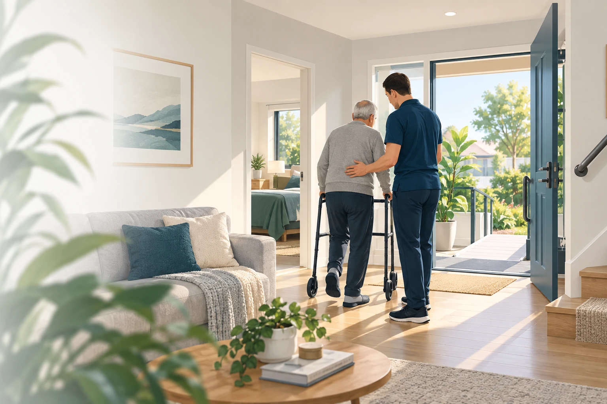
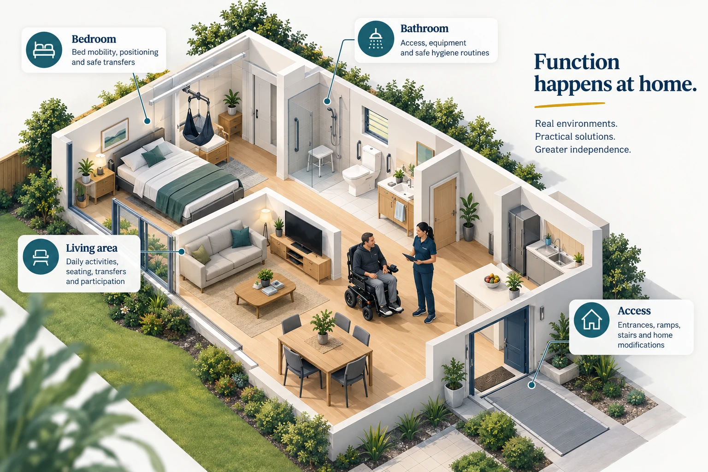
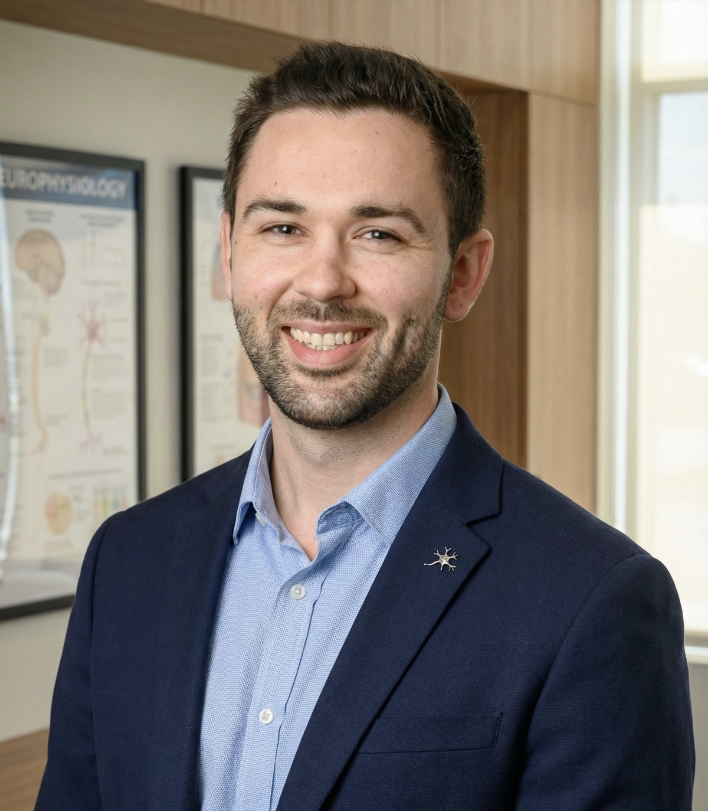

Neurological and progressive conditions
Stroke, MND, ABI, TBI, spinal cord injury, Parkinsonism, MS and changing neurological function.
Western Sydney and The Hills District
Home and community-based physiotherapy for people with neurological, respiratory, mobility and complex disability-related needs.

Quick suitability snapshot
A quick guide to referrals that may suit mobile physiotherapy input.
Stroke, MND, ABI, TBI, spinal cord injury, Parkinsonism, MS and changing neurological function.
Support needs where routines, positioning, equipment, safety and care-team input overlap.
Walking, transfer safety, mobility aids, access barriers and falls-risk concerns.
Changing capacity, pacing, respiratory considerations or support-worker education needs.
Why mobile
A clinic assessment may not show the barriers in a person’s usual environment.

Review bed, chair and toilet transfers in the space and with the supports actually used.
Check how mobility aids, positioning and access barriers affect everyday movement.
Assess pacing and activity tolerance around the person’s usual tasks.
Share practical strategies, training and documentation with relevant people when consent is in place.
Service pathways
Assessment, therapy and care-team support, guided by clinical need.
Functional review, therapy planning and equipment-related recommendations.
Rehabilitation, mobility practice, fatigue management and respiratory monitoring where clinically appropriate.
Support-worker education, risk clarification and function-linked reports where clinically appropriate.
Funding pathways
Service fit, billing arrangements and availability need to be confirmed. Follow the links for pathway details.
DVA and private referrals are accepted. Support at Home enquiries are welcome where services can be arranged through the participant’s registered provider, including under an applicable self-management arrangement.
Tandem is not a registered Support at Home provider. Read FAQs for details.
Self-managed and plan-managed NDIS participants only. Tandem is not an NDIS-registered provider.
iCare/LTCS enquiries are welcome, with commencement subject to relevant scheme approval where required. NSW workers compensation referrals are subject to applicable insurer/scheme requirements.

Clinician-led care
Chris Burgess is Tandem’s Principal Physiotherapist and an Ahpra-registered physiotherapist. He has worked in community neurological and complex disability physiotherapy since 2022.
Service area
Tandem Physio provides mobile physiotherapy across commonly considered areas of Western Sydney and The Hills District. Availability depends on location, timing, clinical fit, funding pathway and current capacity.
Blacktown, Parramatta, Liverpool, Fairfield and The Hills District. See the service-area page for other commonly considered suburbs.
Use the referral page for structured information, or call or email if you need to clarify suitability first. Please avoid including unnecessary sensitive information at the first enquiry stage.